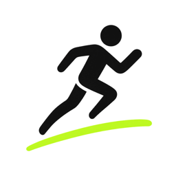
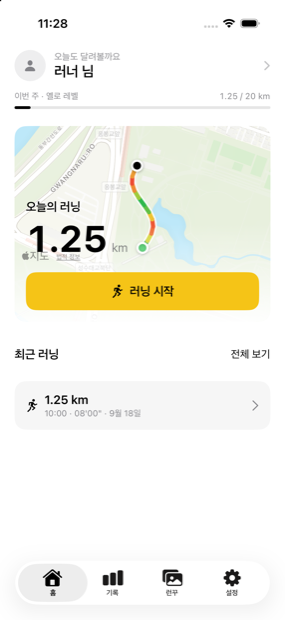

Every Run, A Canvas.
달린 기록을 캔버스에 얹어 꾸미고 공유하는 러닝 앱입니다.

GPS로 거리·시간·페이스와 경로를 기록합니다. 화면을 꺼도 계속 측정하고, 터널처럼 GPS가 끊기는 구간은 걸음 수로 보정합니다.
워치만으로도 달릴 수 있습니다. 폰 앱을 열면 그 기록이 경로까지 그대로 넘어옵니다.
러닝 중 심박수를 기록하고, 완료한 러닝을 Apple 건강 앱에 워크아웃으로 저장합니다.
기록을 캔버스에 얹고 배경·스티커로 꾸며 사진으로 저장하거나 공유합니다.
누적 거리에 따라 레벨이 오르고, 거리·연속 일수·시간대별 뱃지를 모읍니다.
주·월 단위 기록 통계를 보고, 국내 마라톤 대회 일정을 확인합니다.
출시 준비 중입니다. 아직 App Store에 등록되지 않았습니다. 준비가 끝나는 대로 이 페이지에 안내하겠습니다.